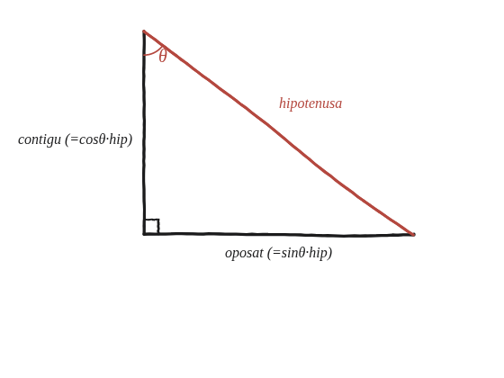

Quina és la relació entre el sinus i el cosinus d'un angle?
Què hem de produir
Una identitat: una igualtat entre sin θ i cos θ que valgui per a qualsevol angle agut, no una que només funcioni per a un angle concret. Convé no confondre-la amb la relació de la Qüestió 78, que lliga els sinus i cosinus dels dos angles d'un triangle rectangle; aquí es tracta d'un sol angle.
Torna a la definició
Amb el triangle rectangle de sempre i θ un dels angles aguts: sin θ = catet oposat / hipotenusa, i cos θ = catet contigu / hipotenusa. Les dues raons comparteixen el mateix denominador, i els dos numeradors són justament els dos catets —o sigui que hi ha una relació entre ells que ja es coneix.

Pitàgores, dividit
El teorema de Pitàgores diu que oposat² + contigu² = hipotenusa². Dividint els dos costats de la igualtat per hipotenusa²: (oposat/hipotenusa)² + (contigu/hipotenusa)² = 1. Els dos parèntesis són exactament sin θ i cos θ, de manera que sin²θ + cos²θ = 1.
Fins on arriba
L'argument fa servir un triangle rectangle de veritat, i per tant θ ha de ser un angle agut: és l'única cosa que fa falta perquè les dues definicions tinguin sentit. Per a angles obtusos la identitat continua valent, però primer cal decidir què volen dir sin i cos d'un angle obtús —que és el que fa la Qüestió 87 amb el sinus.
sin²θ + cos²θ = 1, per a qualsevol angle agut θ. No és una identitat nova: és el teorema de Pitàgores dividit per la hipotenusa al quadrat. Els dos catets, mesurats en unitats d'hipotenusa, són precisament el sinus i el cosinus, i Pitàgores diu que els seus quadrats sumen 1.
Comprovació
Triangle 3-4-5. Per a l'angle que té el 3 al davant: sin θ = 3/5 = 0,6 i cos θ = 4/5 = 0,8, i 0,6² + 0,8² = 0,36 + 0,64 = 1 ✓. Per a l'altre angle agut les dues raons s'intercanvien —sin = 0,8, cos = 0,6— i la suma dels quadrats torna a ser 1, com havia de ser: la identitat no distingeix quin dels dos angles es tria.
I després
Aquesta identitat és la que diu que el punt de coordenades (cos θ, sin θ) cau sempre sobre una circumferència de radi 1: si els quadrats de les dues coordenades sumen 1, la distància a l'origen val exactament 1. Aquest és el pas que permet, més endavant, definir el sinus i el cosinus com les coordenades d'un punt que es mou per aquella circumferència, en lloc de dependre d'un triangle rectangle. Fora de l'abast d'aquest quadern, però val la pena saber cap on porta.